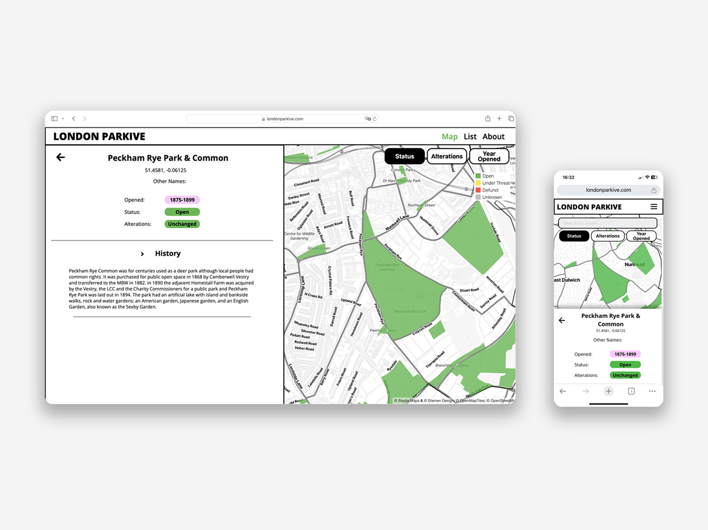
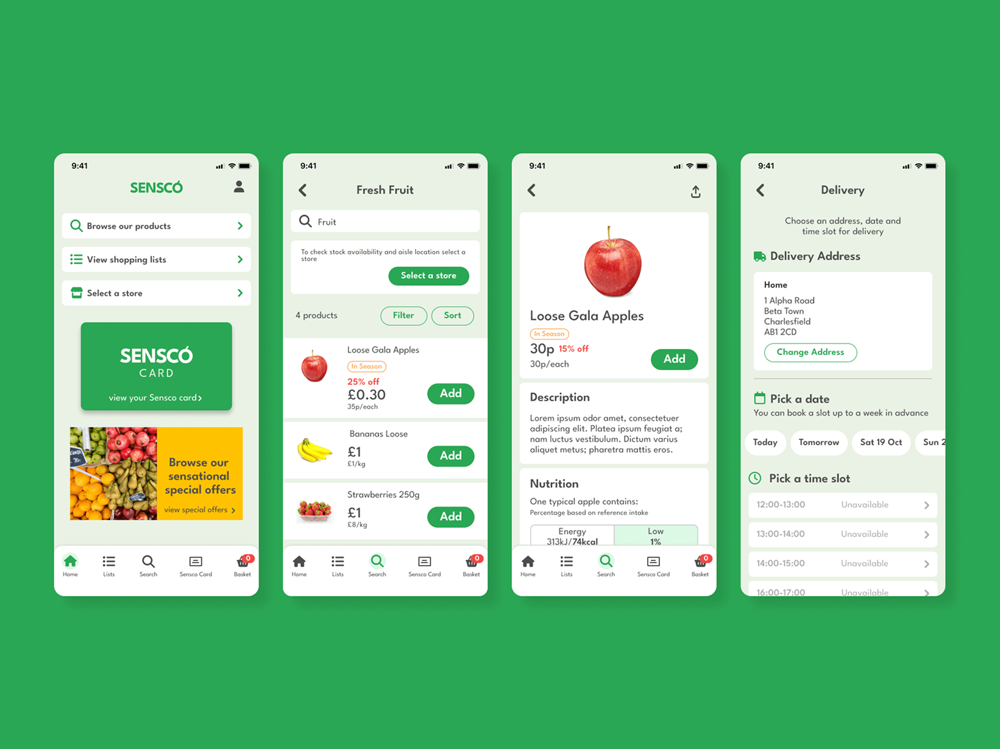
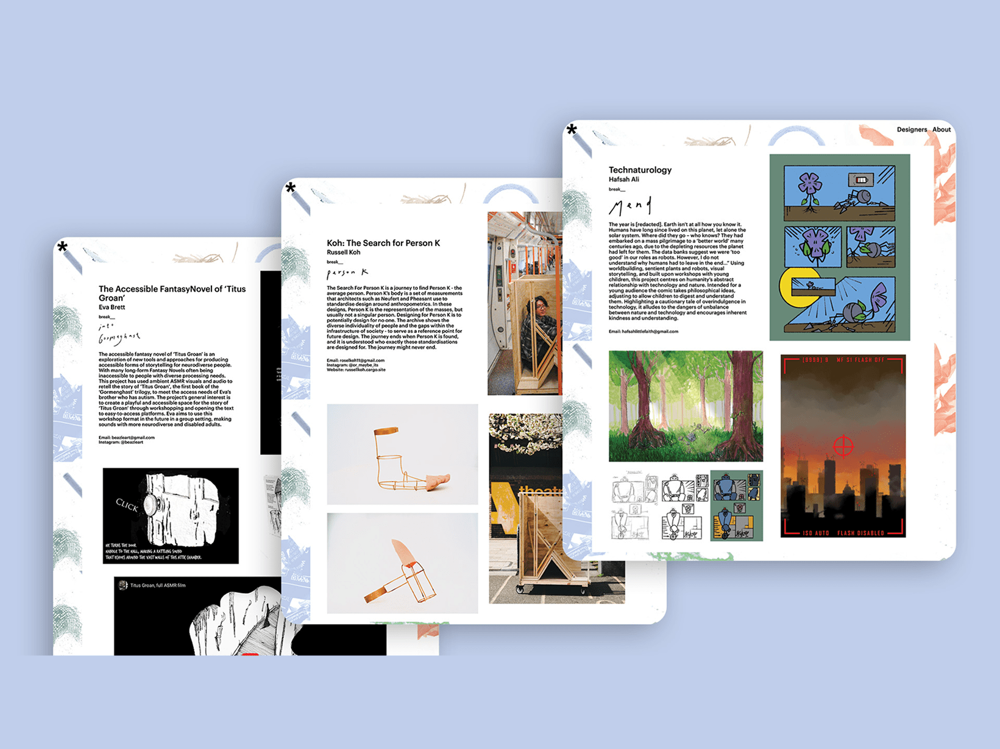

London Parkive
Web Design & Development/Data visualisation
Building an interactive map showcasing the evolution of London’s parks and open spaces

Sensco App
UI/UX
Designing an e-commerce app for a supermarket

A Synonym for Break
Web Design & Devlopment
Building a website for a BA Design Graduate Exhibition